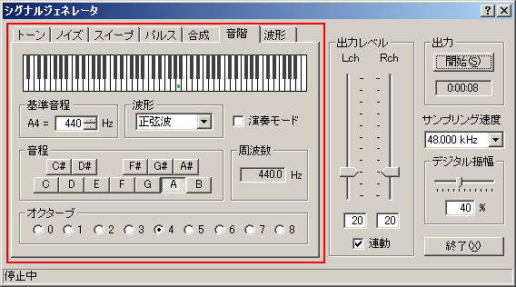
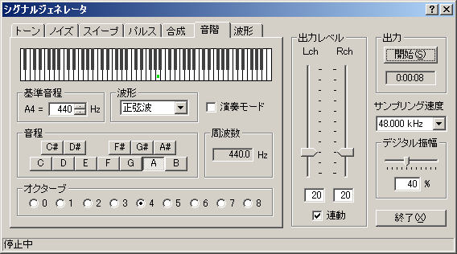
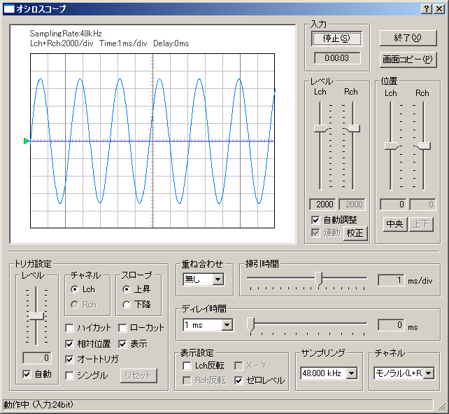

DSSF3 > RA > リファレンス > シグナルジェネレータ

| 項目 | 説明 |
|---|---|
| 基準音階 | 基準となるA4の周波数を数値で入力します。デフォルトは440Hzです。 |
| 波形 | 出力音の波形を選択します。→2-1．トーン参照 |
| 演奏モード | チェックを入れると鍵盤上をクリックした時に音を出力します。 |
| 音程 | 音名を指定します。 |
| 周波数 | 指定された音階の周波数を表示します。 |
| オクターブ | 出力するオクターブを選択します。 |


DSSF3 > RA > リファレンス > シグナルジェネレータ